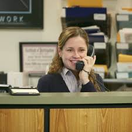

About Pam
Pam is a receptionist at Dunder Mifflin Paper Company in Scrantion, PA.
Pam at her desk
Pam’s characteristics
- She loves painting and sketching.
- She is a founding member of the Finer Things club
- One of her favorite snacks is mixed-berry yogurt.
- She once won a Dundy for having the whitest sneakers.